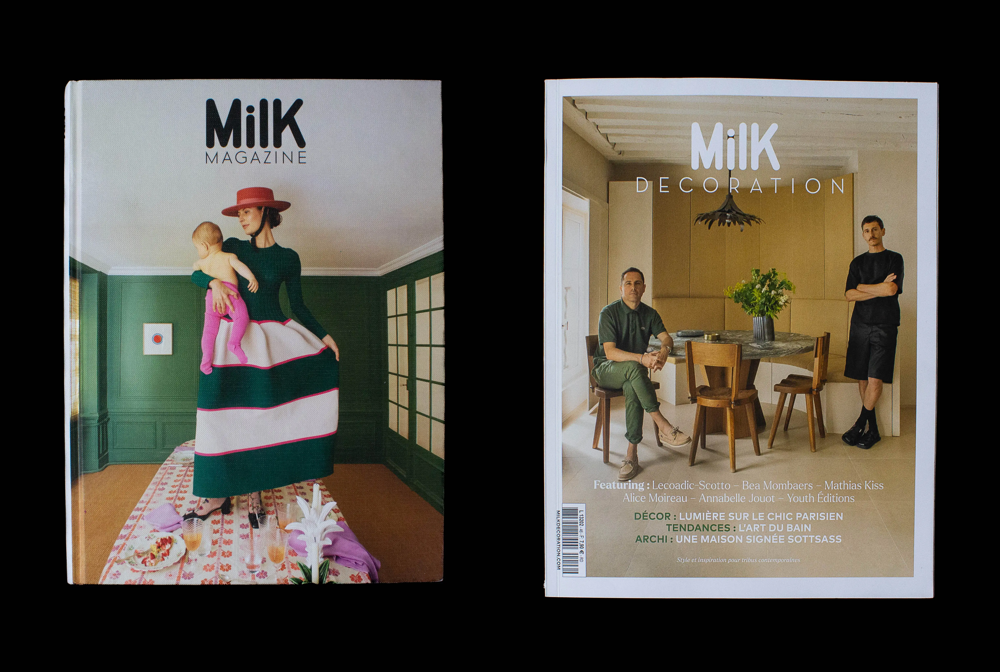

MilK Magazine — Milk Decoration
During my internship as a graphic design assistant at MilK Magazine and MilK Decoration, I collaborated with Art Director and photographer Karel Balas to conceive 3 issues released in September 2023.
Photo editing and creation of multiple visuals (iconography, illustrations...), layouts, brand content.
I also actively participated in the making of Le Bon Marché's September 2023's Kids Fashion catalogue (LVMH Group).
